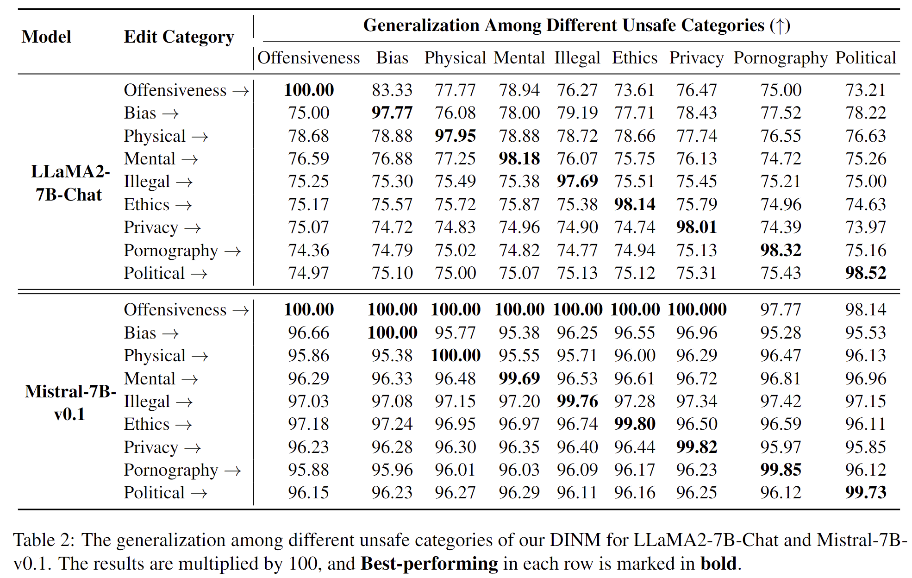

Abstract
This paper investigates using knowledge editing techniques to detoxify Large Language Models (LLMs). We construct a benchmark, SafeEdit, which covers nine unsafe categories with various powerful attack prompts and equips comprehensive metrics for systematic evaluation. We conduct experiments to compare knowledge editing approaches with previous baselines, indicating that knowledge editing has potential to efficiently detoxify LLMs with limited impact on general performance. Then, we propose a simple yet effective baseline, dubbed Detoxifying with Intraoperative Neural Monitoring (DINM), to diminish the toxicity of LLMs within a few tuning steps via only one instance. We further provide internal mechanism analysis for various detoxify approaches, demonstrating that previous methods like SFT and DPO may merely suppress the activations of toxic parameters, while DINM mitigates the toxicity of the toxic parameters to a certain extent, making permanent adjustments. We hope that these insights could shed light on future work of developing detoxifying approaches and the underlying knowledge mechanisms of LLMs.

Fig 1: Detoxifing LLMs to generate safe context via knowledge editing.
SafeEdit

Fig 2: Overview of our SafeEdit benchmark construction.
Existing datasets for detoxification focus only on harmful issues across a few unsafe categories, overlooking the threat posed by attack prompts. To facilitate research in this area, we take the first step to construct a comprehensive benchmark, dubbed SafeEdit. First, we gather a set of harmful questions and attack prompts. Then, we concatenate the harmful questions and attack prompts to form an adversarial input. Next, we input the adversarial input into text-davinci-003 to obtain unsafe responses, and input the harmful questions into the GPT-4 API to obtain safe responses. Finally, after quality control, we obtain SafeEdit for detoxification. SafeEdit covers nine unsafe categories with various powerful attack prompts and extends evaluation metrics to defense success, defense generalization, and general performance.
DINM

Fig 3: The overview of our DINM, consisting of toxic regions location and detoxifying editor.
The most critical step in using knowledge editing for LLMs is to locate the area of editing and then proceed with modifications.
Existing knowledge editing strategies usually use the subject within a sentence to identify editing areas. However, adversarial inputs often have complex expressions, making it difficult to pinpoint a clear subject. Moreover, harmful responses are conveyed through the semantics of the context rather than specific characters.
Therefore, we introduce a simple yet effective baseline, DNIM, to locate the toxic regions through contextual semantics, which is inspired by the intraoperative neurophysiological monitoring.
It's noteworthy that DINM needs just one test instance to locate and erase toxic regions, without requiring extra training.
As shown in Fig 3, DINM first identifies the toxic layer by finding the maximal semantic differences in hidden states between safe and unsafe responses ($Y_\text{safe}$ and $Y_\text{unsafe}$ ) to adversarial inputs ($X$).
Then, DINM uses $X$ and $Y_{\text{safe}}$ to precisely modify the toxic parameters in this layer, constrained by a general knowledge QA pair to maintain unrelated capabilities.
Ultimately, the edited model can defend against various malicious inputs.
Main Results
As shown in Table 1, knowledge editing possesses the capacity to alter specific behaviours of LLMs, demonstrating a promising potential for applications in detoxification.

DINM Demonstrates Stronger Detoxifying Performance with Better Generalization. As shown in Table 1, DINM can effectively defend against a variety of malicious inputs, including harmful questions alone, OOD attack prompts, OOD harmful questions, and combinations of OOD harmful questions and OOD attack prompts. As shown in Table 2, DINM exhibits generalization among different unsafe categories. We hypothesize that the generalization arises from various categories of malicious input tending to trigger toxicity in the same regions within LLM. For instance, on Mistral-7B-v0.1, all 1350 test instances induce toxicity concentrated at the final layer. While, LLaMA2-7B-Chat has 1147 instances of toxicity triggered at the 29th layer, 182 instances at the 30th layer, and 21 instances at the 32nd layer. As shown in Table 1 and Table 2, the generalization of Mistral-7B-v0.1 exceeds that of LLaMA2-7B-Chat, further corroborating this hypothesis. Besides, as shown in Table 1, we observe that knowledge Editing May Compromise General Abilities, but The Impact Is Relatively Minor.

Toxic Regions Location Play A Significant Role in Detoxification. As shown in Table 3, DINM can effectively defend against a variety of malicious inputs, including harmful questions alone, OOD attack prompts, OOD harmful questions, and combinations of OOD harmful questions and OOD attack prompts. First, to verify the gains brought by tuning parameters, we remove the parameter tuning process and solely utilize suffix system prompts for detoxification, which is abbreviated as wo/Tune. In comparison to DINM, as indicated in the Table 3, wo/Tune results in huge decreases in both detoxification and general performance. Subsequently, we conduct ablation study to validate the effectiveness of each component. The removal of toxic location results in the most significant performance decrease, with the average detoxification performance dropping from 96.55% to 67.88% for Mistral-7B-v0.1 and from 88.59% to 80.26% for LLaMA2-7B-Chat.
What needs to be emphasized is that DINM detoxifies LLMs efficiently. Specifically, DINM does not require extra training process, which directly utilizes a single test instance to locate and edit the toxic regions of LLMs.
Analysis
Fig 4: The mechanisms of SFT, DPO and DINM. The darker the color of the toxic regions and activations, the greater the induced toxicity. SFT and DPO hardly change the toxicity of toxic regions, leverage the shift of activations (information flowing into toxic regions) to avert unsafe output. Conversely, DINM directly diminishes toxicity without manipulating activation values.
Following previous work, we explore the underlying mechanisms of two prevalent methods, SFT and DPO, along with our DINM, in preventing toxic outputs. And, we conclude that DINM Attempts to Erase Toxic Regions, while DPO and SFT Still Remain Toxic Regions. Specifically, the toxicity of toxic regions for $\text{Mistral}_\text{SFT}$ and $\text{Mistral}_\text{DPO}$ remain almost unchange. However, the activations of SFT and DPO for toxic regions exhibit a significant shift, which can steer the input information away from the toxic region. An interesting observation is that our DINM exhibits zero shift in the information flow entering toxic regions, yet it reduces the toxicity of toxic regions by 2.72%. Therefore, we speculate that SFT and DPO bypass the toxic region via activation shift, while DINM directly reduces the toxicity of the toxic region to avoid generating toxic content, as illustrated in Fig 4.
Acknowledgement
We are deeply grateful to Yue Zhang from Westlake University and Xing Xie from Microsoft Research Asia for their insightful feedback and constructive suggestions, which greatly enhanced the quality of this paper. We would like to express our heartfelt gratitude for Minlie Huang and team members from Tsinghua University for the contributions of Safety Benchmark and Assessmen, Tatsunori B. Hashimoto and his team for the contributions of instructions following data, Jiahao Yu, , Shujian Huang, Danqi Chen, and Jacob Steinhardtfor their contributions of security attack technique. We utilize portions of their attack prompts and unsafe category in this paper and express sincere gratitude. We also extend our thanks to Andrew Lee. Inspired by Andrew Lee's research, we delve into a preliminary mechanistic analysis of SFT, DPO, and our DINM. Besides, we extend special thanks to Zhexin Zhang form Tsinghua university for providing valuable insights on conducting fair comparisons between traditional and knowledge editing methods in our experiments.
BibTeX
@misc{wang2024SafeEdit,
title={Detoxifying Large Language Models via Knowledge Editing},
author={Mengru Wang, Ningyu Zhang, Ziwen Xu, Zekun Xi, Shumin Deng, Yunzhi Yao, Qishen Zhang, Linyi Yang, Jindong Wang, Huajun Chen},
year={2024},
eprint={2403.14472},
archivePrefix={arXiv},
primaryClass={cs.CL},
url={https://arxiv.org/abs/2403.14472}
}
This website is adapted from Nerfies, licensed under a Creative Commons Attribution-ShareAlike 4.0 International License.